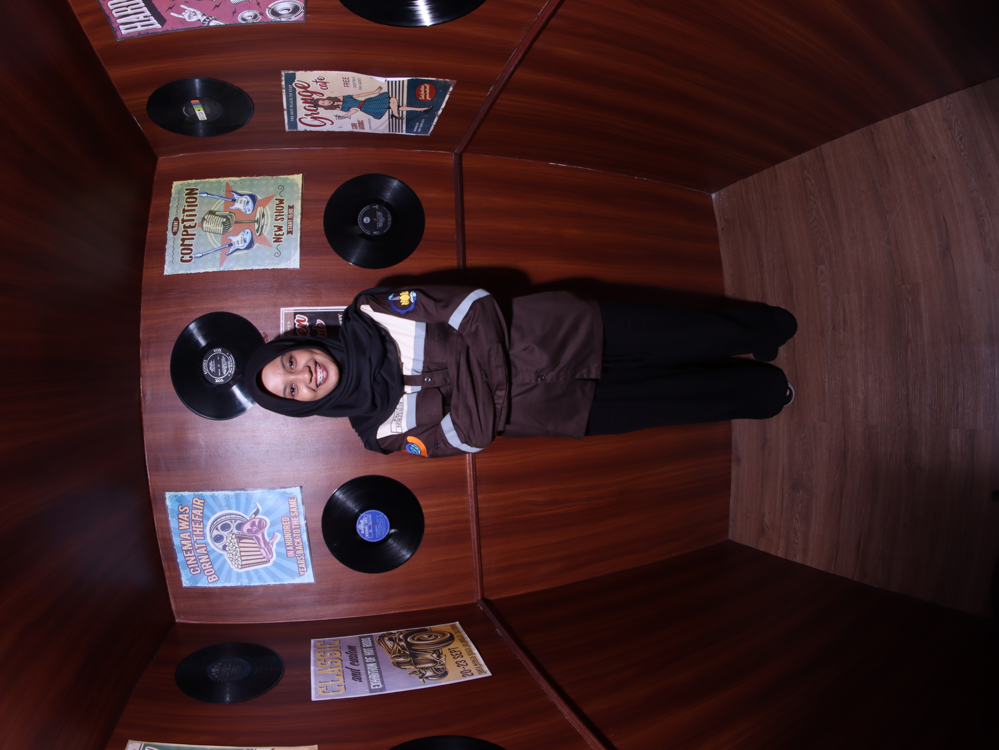
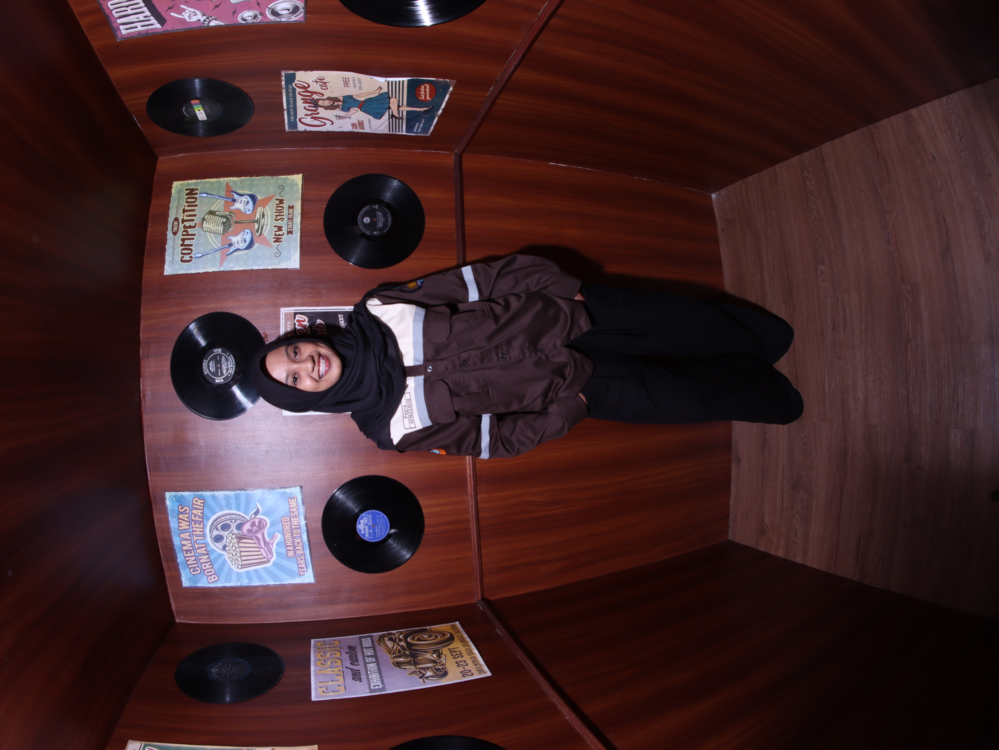
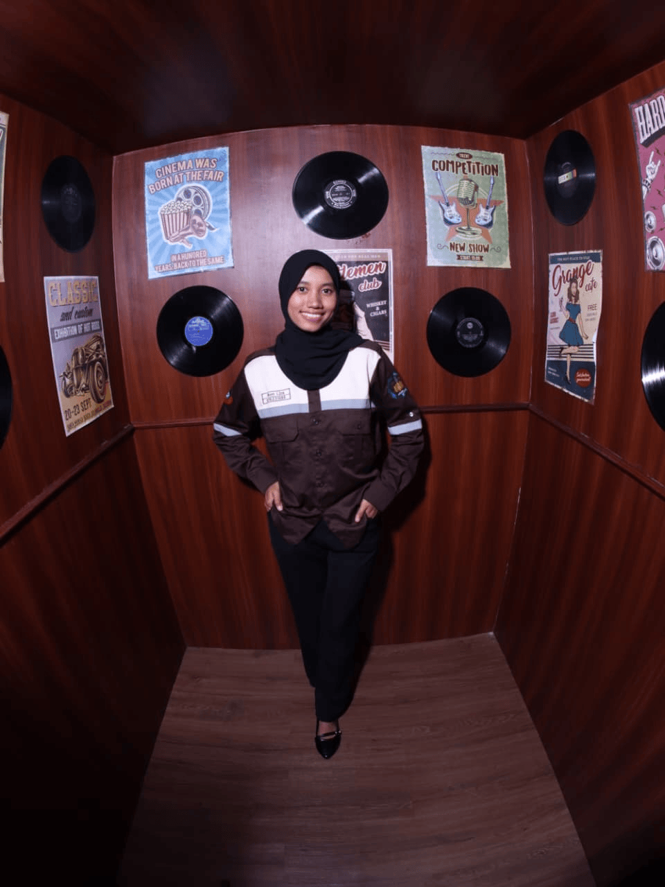
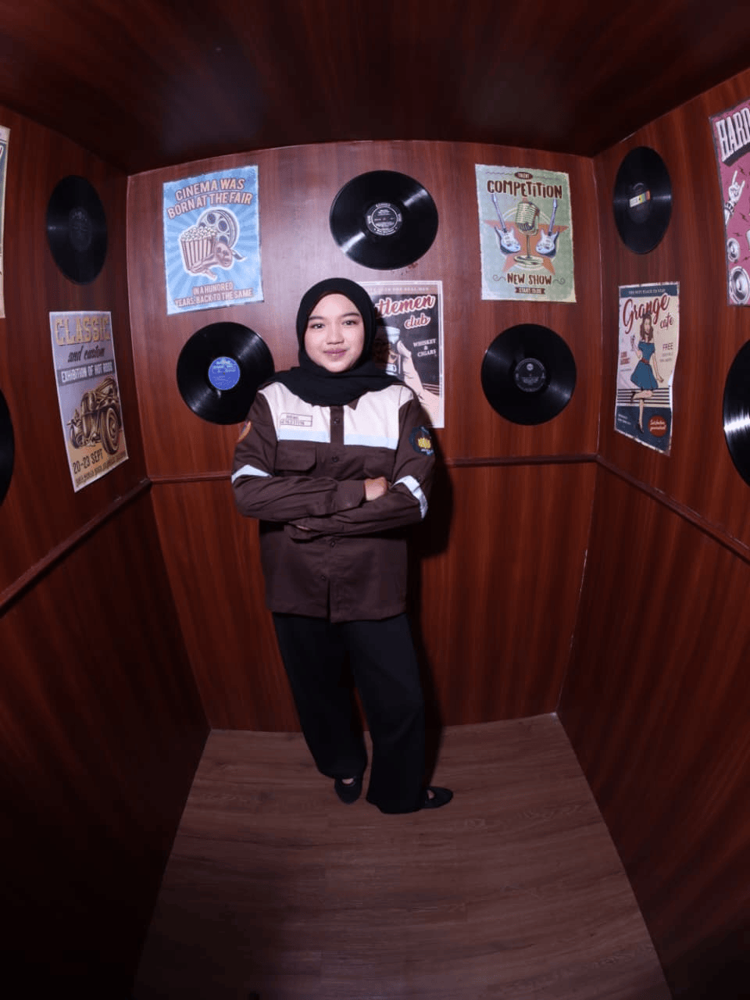

Behind the Project
DevelopmentTeam
Tim Geodesi yang mengembangkan WebGIS untuk analisis risiko DBD di Kota Surabaya






Aedes aegypti Environmental Risk System
Dashboard spasial interaktif untuk analisis risiko
Demam Berdarah Dengue berbasis faktor lingkungan di Kota Surabaya
Pelajari penyebab, gejala, pola penyebaran, hingga langkah pencegahan Demam Berdarah Dengue (DBD) secara interaktif dan mudah dipahami.
Aedes aegypti Environmental Risk System
Mengintegrasikan variabilitas curah hujan dan potensi genangan untuk memetakan distribusi risiko Demam Berdarah Dengue menggunakan teknologi WebGIS interaktif.
Kota Surabaya merupakan salah satu wilayah perkotaan yang sering mengalami hujan berintensitas tinggi, terutama pada musim penghujan. Kondisi tersebut dapat memicu munculnya genangan air di berbagai wilayah kota. Lingkungan yang lembap serta adanya akumulasi air berpotensi menjadi habitat ideal bagi nyamuk Aedes aegypti. Pada saat yang sama, kasus DBD di Kota Surabaya masih menunjukkan peningkatan — menunjukkan bahwa risiko penyakit tidak hanya dipengaruhi faktor kesehatan, tetapi juga memiliki hubungan erat dengan kondisi lingkungan dan spasial.
Genangan air yang terbentuk setelah hujan berpotensi menjadi habitat berkembangnya nyamuk Aedes aegypti. Dengan pendekatan analisis spasial dan machine learning, AERIS dikembangkan untuk memahami pola risiko DBD secara lebih cepat, visual, dan interaktif.
Setiap faktor lingkungan saling terhubung — dari curah hujan ekstrem hingga kasus DBD yang meningkat. Analisis spasial AERIS memetakan rantai risiko ini di seluruh 31 wilayah Kota Surabaya.
Perubahan intensitas curah hujan memengaruhi kelembapan lingkungan dan meningkatkan peluang terbentuknya genangan.
Genangan air yang terbentuk setelah hujan dapat menjadi tempat penampungan air yang mendukung perkembangbiakan nyamuk.
Aedes aegypti berkembang pada lingkungan dengan kondisi lembap, air tergenang, dan kepadatan permukiman tinggi.
Kondisi lingkungan tertentu dapat meningkatkan potensi penyebaran Demam Berdarah Dengue di wilayah perkotaan.
Penelitian dilakukan di Kota Surabaya dengan fokus analisis spasial risiko DBD berbasis variabilitas curah hujan dan potensi genangan
Penelitian ini bertujuan untuk menganalisis hubungan antara variabilitas curah hujan, potensi daerah rawan genangan, dan faktor lingkungan lainnya terhadap risiko kejadian DBD di Kota Surabaya.
Selain itu, penelitian juga membangun model prediksi untuk memperkirakan jumlah kasus DBD pada periode 2025–2026.
Variabel-variabel yang digunakan dalam penelitian untuk memodelkan risiko DBD di Kota Surabaya.
Data kasus DBD per kecamatan tahun 2019 - 2024 sebagai variabel target dalam pemodelan prediksi risiko spasial.
Tahapan analisis dari pengumpulan data hingga prediksi dan visualisasi risiko DBD.
Visualisasi distribusi kasus DBD per kecamatan tahun 2025 dan 2026 berbasis prediksi model Binomial Negatif, XGBoost, Random Forest, dan SVR
Eksplorasi data CHIRPS 2019–2025 secara interaktif per wilayah
Pemetaan daerah rawan genangan sebagai variabel risiko DBD
🔗 Buka Peta Genangan →Tim Geodesi yang mengembangkan WebGIS untuk analisis risiko DBD di Kota Surabaya



